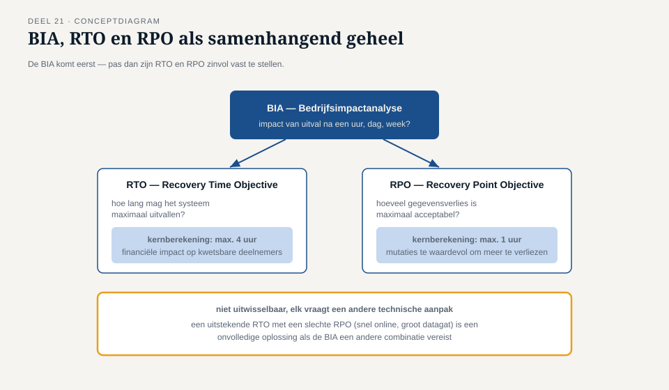
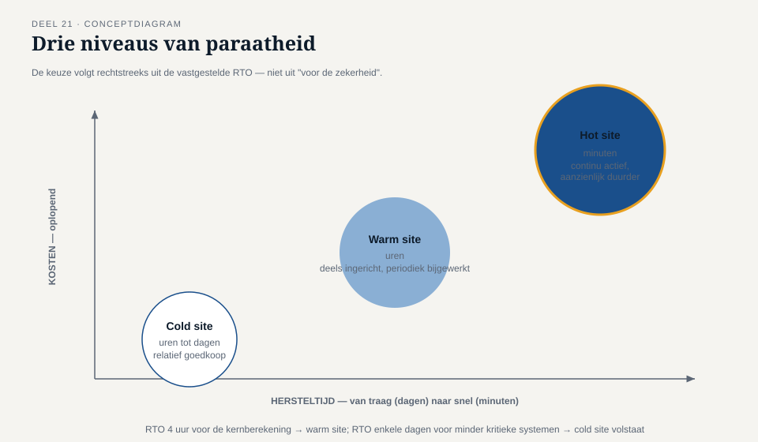
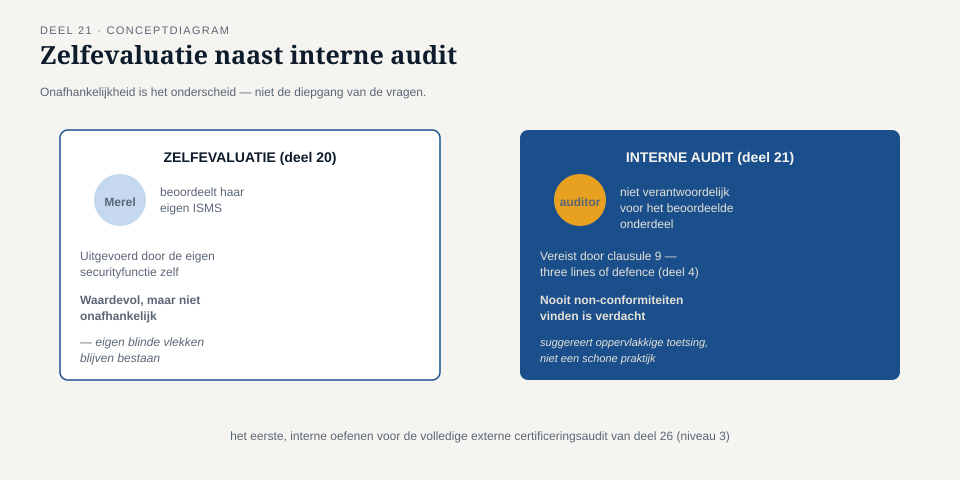

Deel 21 — Continuïteit en herstel
Reader · Ductus-cursus Informatiebeveiliging en privacy · niveau 2 (professional) · deel 21 van 22
Casusvervolg: de vraag die niemand durfde stellen
Na het incident uit deel 19 stelt Ruud, tijdens de post-mortem, een vraag die tot dan toe niemand hardop had gesteld: "Als het niet een autorisatiefout was geweest, maar een ransomware-aanval die onze hele mutatieomgeving had platgelegd — hadden we dan geweten hoe we weer online kwamen? En hoe snel?" Stilte. Er is een back-upproces (deel 7), maar niemand in de kamer kan met zekerheid zeggen wanneer voor het laatst daadwerkelijk is getest of een volledige herstelprocedure werkt, en al helemaal niet hoe lang dat zou duren. Dit deel geeft het instrumentarium om die vraag wél te kunnen beantwoorden: continuïteitsmanagement, met interne audit als sluitstuk van niveau 2.
1. Bedrijfsimpactanalyse: eerst weten wat je niet kunt missen
Voordat je kunt plannen hoe snel je moet herstellen, moet je weten wat er gebeurt als een systeem uitvalt — en voor hoelang dat acceptabel is. Een bedrijfsimpactanalyse (Business Impact Analysis, BIA) brengt dit systematisch in kaart: voor elk kritiek proces of systeem, wat is de impact van uitval na een uur, een dag, een week? Voor het Mutatieplatform betekent dit bijvoorbeeld: uitval van de koppeling met werkgeversportalen is vervelend maar draaglijk voor een paar uur (werkgevers kunnen mutaties tijdelijk niet indienen, maar niets gaat definitief verloren); uitval van de kernberekening van pensioenaanspraken raakt al na enkele uren de tijdige uitbetaling van premievrijstellingen, met directe financiële gevolgen voor kwetsbare deelnemers.
Deze analyse is niet uniform voor de hele organisatie — de impact van uitval verschilt sterk per systeem, en de BIA maakt dat verschil expliciet zichtbaar in plaats van elk systeem impliciet even belangrijk te behandelen.
2. RTO en RPO: twee getallen die alles veranderen
Uit de BIA volgen twee kerngetallen per systeem:
- RTO (Recovery Time Objective) — hoe lang mag het systeem maximaal uitvallen voordat het weer beschikbaar moet zijn? Dit is een tijdsmaat: uren, een dag, een week.
- RPO (Recovery Point Objective) — hoeveel gegevensverlies is maximaal acceptabel, uitgedrukt in tijd sinds de laatste bruikbare back-up? Een RPO van vier uur betekent: in het slechtste geval mag je maximaal vier uur aan mutaties kwijtraken.
Deze twee getallen zijn niet uitwisselbaar en vragen elk een andere technische aanpak. Een lage RTO (snel weer online) vraagt om een goed geoefende, snelle herstelprocedure — mogelijk zelfs een volledig uitwijksysteem dat al klaarstaat. Een lage RPO (weinig gegevensverlies) vraagt om frequente back-ups of continue replicatie, ongeacht hoe snel het herstel zelf verloopt. Een organisatie kan een uitstekende RTO en een slechte RPO hebben (snel weer online, maar met een groot gat aan verloren mutaties) of andersom (weinig gegevensverlies, maar dagenlang niet beschikbaar) — beide zijn onvolledige oplossingen als de BIA een andere combinatie vereist.
Voor de kernberekening van pensioenaanspraken concluderen Karin en Merel, op basis van de BIA: een RTO van maximaal vier uur (gezien de financiële impact op kwetsbare deelnemers) en een RPO van maximaal één uur (mutaties zijn te waardevol en te lastig te reconstrueren om een groter gat te accepteren). Deze twee getallen bepalen vervolgens rechtstreeks welke back-upfrequentie en welk type uitwijkvoorziening nodig zijn — een technische keuze die pas zinvol te maken is nádat deze getallen zijn vastgesteld, niet ervoor.
3. Uitwijk: drie niveaus van paraatheid
Wanneer een RTO kort genoeg is dat een reguliere back-up-en-herstelprocedure niet volstaat, is een vorm van uitwijk (disaster recovery) nodig: een alternatieve omgeving die kan overnemen. Drie gangbare niveaus, oplopend in kosten en in snelheid van overname:
- Cold site — een fysieke of virtuele locatie die pas bij een calamiteit wordt ingericht en gevuld met de meest recente back-up. Traag (uren tot dagen), maar relatief goedkoop.
- Warm site — een omgeving die al deels is ingericht en periodiek wordt bijgewerkt, maar niet continu actief draait. Sneller dan cold (uren), duurder dan cold.
- Hot site — een volledig actieve, continu bijgewerkte tweede omgeving die vrijwel direct kan overnemen. Snel (minuten), maar aanzienlijk duurder om structureel in stand te houden.
De keuze tussen deze drie is rechtstreeks een uitkomst van de RTO uit paragraaf 2: een RTO van vier uur voor de kernberekening rechtvaardigt mogelijk een warm site; een RTO van enkele dagen voor minder kritieke systemen kan volstaan met een cold site. Een hot site voor elk systeem, "voor de zekerheid", is zelden proportioneel en verspilt middelen die beter aan echt kritieke systemen besteed kunnen worden — weer een toepassing van de risicogebaseerde logica uit deel 12.
4. Herstel na ransomware: een bijzonder scenario
Ruuds vraag in de opening ging specifiek over ransomware, en dat scenario verdient een aparte behandeling omdat het een aanname van reguliere continuïteitsplanning ondermijnt: bij een reguliere storing (bijvoorbeeld hardwarefalen) is de laatste back-up per definitie betrouwbaar om naar terug te keren. Bij ransomware is dat niet vanzelfsprekend — de aanval kan zich al enige tijd ongemerkt door het netwerk hebben verspreid vóórdat de versleuteling zichtbaar werd, wat betekent dat ook recente back-ups mogelijk al besmet of gecompromitteerd zijn.
Dit vraagt om een aanvullende stap die reguliere hersteldraaiboeken vaak missen: vaststellen van een schoon herstelpunt, wat onderzoek vergt naar wanneer de aanvaller voor het eerst toegang kreeg (deel 2, de aanvalsfasering), niet simpelweg de meest recente back-up terugzetten. Dit is precies waarom de 3-2-1-back-upregel uit deel 7 de offsite-eis bevat: een air-gapped of anderszins geïsoleerde back-up, die de ransomware nooit heeft kunnen bereiken, is vaak het enige betrouwbare herstelpunt in dit scenario.
5. Interne audit: het sluitstuk van niveau 2
Niveau 2 sluit inhoudelijk af met een instrument dat clausule 9 van ISO/IEC 27001 (deel 11) expliciet vereist: interne audit — een systematische, onafhankelijke beoordeling of het ISMS daadwerkelijk voldoet aan de eigen vastgestelde normen en aan de norm zelf. Dit is de eerste, interne oefening voor wat deel 26 (niveau 3) verder uitwerkt tot een volledige externe certificeringsaudit.
Een interne audit onderscheidt zich van de zelfevaluatie uit deel 20 door de mate van onafhankelijkheid: waar zelfevaluatie door de eigen securityfunctie kan worden uitgevoerd, vereist een interne audit — in lijn met three lines of defence uit deel 4 — een auditor die niet zelf verantwoordelijk is voor het onderdeel dat wordt beoordeeld. Bij Meridiaan betekent dit dat Merel niet haar eigen ISMS mag auditeren; dit vraagt om een aparte, onafhankelijke interne auditfunctie (of, bij een kleinere organisatie, een externe partij die de interne audit uitvoert namens het bestuur).
Een interne audit levert, net als bij een DPIA (deel 16, 17) of een risicobeoordeling (deel 12), soms ongemakkelijke bevindingen op — non-conformiteiten: plekken waar het ISMS niet voldoet aan wat het zelf beweert te doen. Net als bij elk ander instrument in deze cursus is een audit die nooit non-conformiteiten vindt, verdacht in plaats van geruststellend: het suggereert een oppervlakkige toetsing, niet een schone praktijk.
6. Ruuds vraag beantwoord
Met dit instrumentarium test Meridiaan, enkele maanden na het incident, voor het eerst een volledige herstelprocedure voor de kernberekening van pensioenaanspraken: een gesimuleerde uitval, gevolgd door een daadwerkelijke poging tot herstel binnen de vastgestelde RTO van vier uur. De test onthult een onaangename maar waardevolle bevinding: het herstel duurt in de praktijk zes uur, twee uur langer dan de RTO toestaat, doordat een tussenstap in het herstelscript niet was bijgewerkt na een eerdere systeemwijziging. Dit is precies het soort bevinding die de rode draad van deze cursus illustreert: het back-upproces was aanwezig, het testen maakte het voor het eerst aantoonbaar ontoereikend, en pas na correctie van het herstelscript kan het daadwerkelijk werkend worden genoemd. Ruuds vraag had, met andere woorden, allang eerder gesteld moeten worden.


